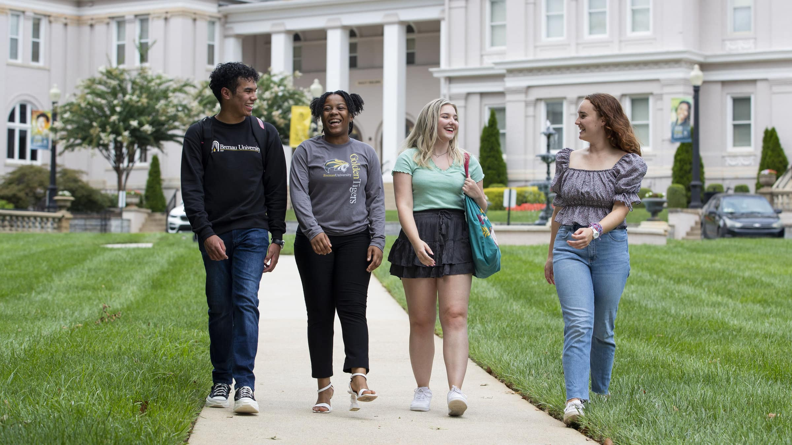

Comenzá una nueva etapa

Tu futuro te espera
Arte, ciencia, cultura, bienestar y deporte. La importancia de la cercanía y la personalización del aprendizaje continuo para que los alumnos encuentren la mejor versión de sí mismos. Revolucionamos los aspectos clave en el momento de iniciar una carrera universitaria.
Seguinos en redes